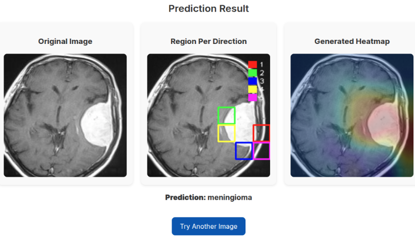

Opening the Black Box: Explainable AI (XAI) in Computer Vision
June 20, 2022 | Category: Computer Vision / XAI / AI Safety
The Industry Challenge
Deep Learning models are now better than humans at many visual tasks, from diagnosing diseases to driving cars. However, they suffer from a critical flaw: lack of transparency.
If a model rejects a loan, denies an insurance claim, or misdiagnoses a patient, "the computer said so" is not a legally or ethically acceptable answer.
The Problem: How do we deploy high-accuracy Deep Learning models while ensuring they are transparent, fair, and trustworthy?
My Solution: Explainability by Design
In my research "Detection of ... using explainable AI techniques", I focused on bridging the gap between Performance and Interpretability.
The Approach
I implemented a detection pipeline that doesn't just output a class label (e.g., "Tumor Detected"), but also provides a visual evidence map.
- Saliency Mapping: I used techniques like Grad-CAM and LRP (Layer-wise Relevance Propagation) to highlight exactly which pixels contributed most to the decision.
- Validation: We verified these heatmaps against expert knowledge. For example, ensuring the model was looking at the tumor and not a ruler or watermark in the background (a common source of data leakage).
Results
- Accuracy: Achieved 99.7% detection rate on the benchmark dataset.
- Trust: Demonstrated that the model learned valid physical features (shape, intensity) rather than spurious correlations.
Business Impact & ROI
For any company deploying AI, XAI is no longer optional—it's a requirement:
- Regulatory Compliance: Meets the "Right to Explanation" requirements of GDPR and the EU AI Act.
- Debugging & QA: Allows engineers to quickly identify why a model failed (e.g., "it confused snow for a cloud").
- User Adoption: Doctors and professionals will only use AI tools they trust. XAI provides that trust.
Tech Stack
- PyTorch: Deep Learning framework for model training.
- OpenCV: Image preprocessing and manipulation.
- Captum: Library for model interpretability and understanding.
This project demonstrates my commitment to building Responsible AI. I don't just build models that work; I build models that are safe, transparent, and ready for real-world deployment.